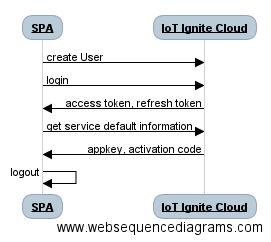

Sequence Diagram

REST APIs
The REST API url for the requests;
const API_URL = 'https://api.ardich.com/api/v3';
Create User
Creating user to Service Provider Brand is as follows;
$http({
method: 'POST',
data:{
"firstName": firstName,
"lastName": lastName,
"mail": mail,
"password": password,
"profileName": profileName,
"brand": brand
},
url: API_URL + '/public/create-restricted-user',
headers: {
'Content-Type': 'application/json'
},
})
Login
$http({
method: 'POST',
data: "grant_type=password&username=" + email + "&password=" + password;,
url: API_URL + '/login/oauth',
headers : {
'Content-Type': 'application/x-www-form-urlencoded',
'Authorization': 'Basic ' + btoa(clientId + ":")
}
})
clientId is Service Provider Id that was created in IoT-Ignite Devzone.
The return access token, refresh token and user email could be stored in the SQLite table for future use as in sample code.
Device
Get Information
Mostly for the interaction of the user interface there are success and error callbacks used in functions.
- Get Service Default Information
$http({
method: 'GET',
headers: {
'Authorization': 'Bearer ' + accessToken
},
url: API_URL + '/ignite/default-qr-attributes'
})
Update Information
You can change device label in IoT Ignite Cloud as follows:
$http({
method: 'PUT',
data:{
"label": label
},
headers: {
'Authorization': 'Bearer ' + accessToken
},
url: API_URL + '/device/' + deviceCode + '/label'
})
You can also inform device itself about label change:
$http({
method: 'POST',
data:{},
headers: {
'Authorization': 'Bearer ' + accessToken
},
url: API_URL + '/device/' + deviceCode + '/control/pushTenantDeviceInfo'
})
For full information about IoT Ignite Cloud APIs, please visit devzone.iot-ignite.com/article-categories/api/